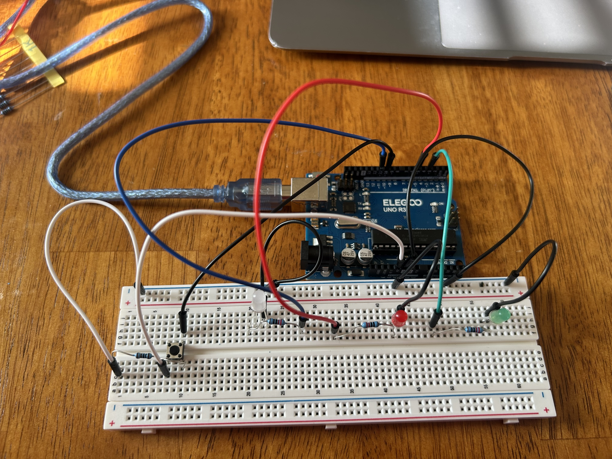
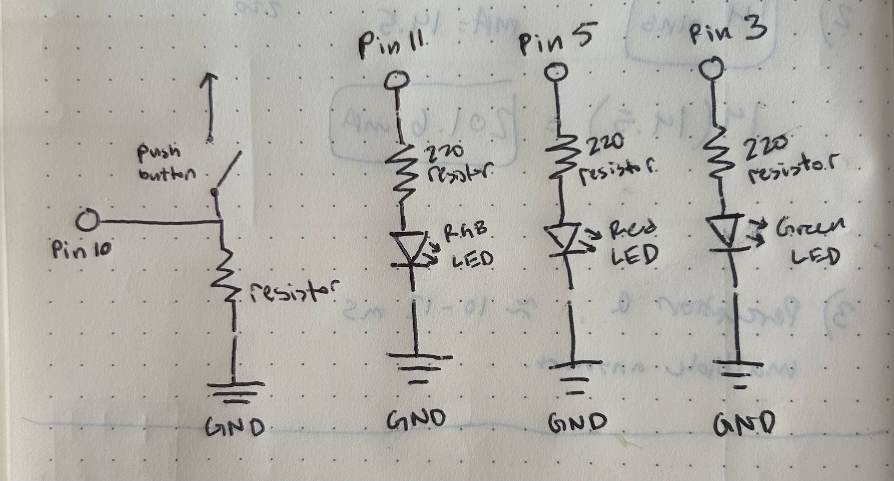
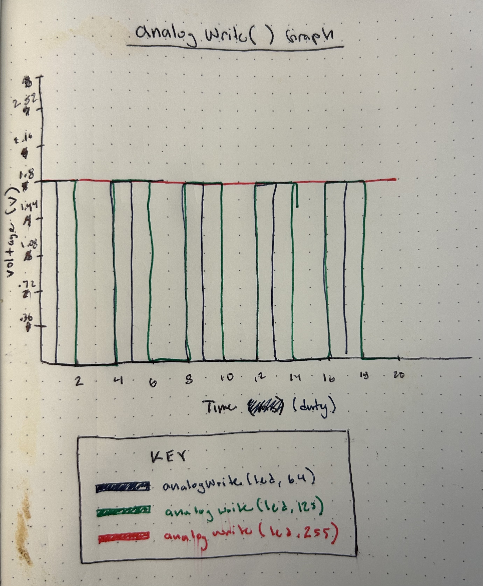
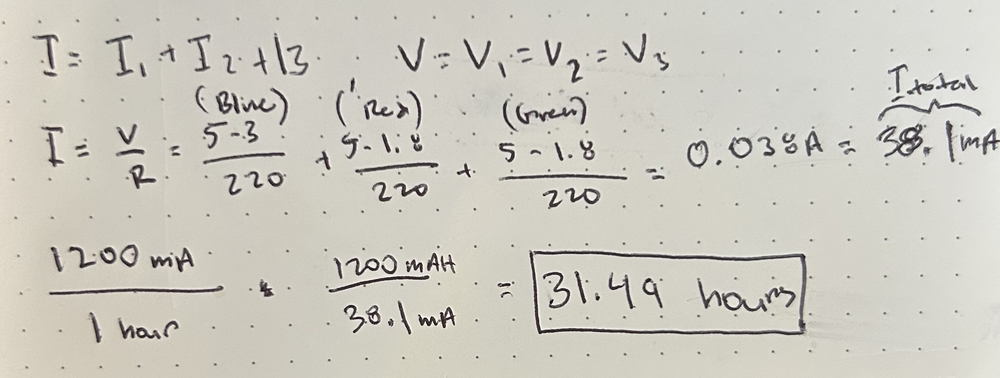

Fade Assignment
Circuit Gif

Resistor Calculation
To calculate the resistor value for each LED we need to know the voltage drop for red and green LEDs which are all around 1.8V and a blue LED (which is a RGB LED) is around 3V. We also know that each LED should run at a 20mA current and the Arduino gives 5 volts. Thus we use Ohm's law to calculate the LED resistor values to limit current flowing through the LEDs:
V = I x R // Ohm's Law
I = 20mA = 0.02A // Desired Current
V = V - Vf = 5 - 1.8 = 3.2 V // Green and Red Voltage
V = V - Vf = 5 - 3 = 2 V // Blue Voltage
R = V / I = 3.2V / 0.02A = 160Ω // Green and Red Resistance
R = V / I = 2V / 0.02A = 100Ω // Blue Resistance
// Chose 220 resistors for all LEDS
I used a 10kΩ resistor for my button because it is the standard for a pull-down resistor as stated on the arduino manual. We also want less mA or current to conserve power in our circuit. With a 10k resistor we would have 5mA current which is great!
V = I x R // Ohm's Law
5 = I x 1000
I = .005A = 5mA
// Chose 10k resistors for the button
Circuit
Schematic
I made sure to connect all LEDs to digital pins that were compatible with analogWrite() and PWM indicated by this symbol ~. Each LED has a 220 resistor and the button has a 10k resistor.
Arduino Code
This code makes all 3 LEDs fade when pressing the button.
// Defining variable names to pins
int blue = 11; // blue pin
int green = 3; // green pin
int red = 5; // red pin
int button = 10; // button pin
// Setup code, to run once
void setup() {
pinMode(blue, OUTPUT); // blue LED
pinMode(button, INPUT); // button
pinMode(green, OUTPUT); // green LED
pinMode(red, OUTPUT); // red LED
}
// Loop function runs over and over again forever making the LEDs fade
void loop() {
// start with all LEDs turned off
digitalWrite(blue, LOW);
digitalWrite(green, LOW);
digitalWrite(red, LOW);
// when the button is pressed make the LEDs fade until not pressed anymore
int buttonState = digitalRead(button);
while(buttonState == HIGH) {
// fade LEDs from min to max brightness
for(int i = 0; i < 255; i++) {
analogWrite(blue, i); // blue LED
analogWrite(green, i); // green LED
analogWrite(red, i); // red LED
delay(5); // wait for 5ms
}
// fade LEDs from max to min brightness
for(int i = 255; i >= 0; i--) {
analogWrite(blue, i); //blue LED
analogWrite(green, i); // green LED
analogWrite(red, i); // red LED
delay(5); // wait for 5ms
}
// fade LEDs off in 10 ms when button is unpressed
buttonState = digitalRead(button);
delay(10);
}
}
Additional Questions
Question 1
analogWrite(led, 64) has a PWM signal with a low duty cycle of 25%. analogWrite(led, 128) has a PWM signal with a medium duty cycle of 50%. analogWrite(led, 255) has a PWM signal that results in the LED being always on resulting in a constant high voltage (5V) or 100% duty cycle. The voltage is based hypothetically on a red LED.
Question 2
My LEDs are in a parallel configuration because each LED is independently connected to its own digital pin and ground, which means that the total current (I) is going to be all the LEDs mA added together which is around 38.1mA. However, because my LEDs are fading, they will there is a 50% duty cycle across the fade cycle when the button is being held. Assuming that my button is pressed the whole time, if my circuit was to be powered by a 1200 mAh battery, it would run for around 31.49 hours multiplied by 2 to account for fading which would be 62.98 hours.
